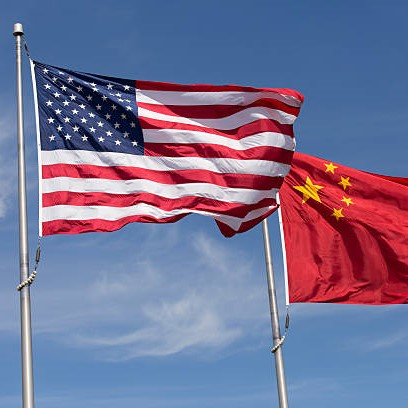

Геополитическото напрежение между САЩ и Китай се прехвърли в сектора на полупроводниците през 2022 г., когато администрацията на президента на САЩ Байдън въведе нови правила за контрол на сумата през декември, които ще забранят на американските компании да продават усъвършенствани полупроводници и оборудването, използвано за производство им. Някои китайски производители. След това през декември разширихме този лимит. Вътрешен човек от индустрията изрази съжаление за щетите върху веригата за доставка на всички видове продукти, базирани на чип технология, от компютри до електрически превозни средства, както каза, че този регламент е знак, че ерата на цялата по-интензивна глобализация е към своя край . Корпорации от всякакъв вид са включени в престрелка между двете световни суперсили.